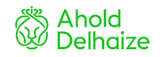

Dutch blockchain rocks!
Stay tuned for upcoming blockchain podcasts!
This series of broadcasts is all about Dutch blockchain people & projects; their goals, their passion, their community, their tech, their people.
Blockrock podcast #19: Interview with Meyade Curfs, Dutch ambassador of Lisk, a blockchain platform for Javascript based dapps.
This episode is hosted by Duco Kuipers and Bart van Maarseveen.
Duco & Bart bumped onto Meyade on a Blockbar blockchain co-work day in The Hague Tech. We had an open talk with Meyade on how he got into crypto and why he was amazed by Lisk. We talk about the team in Berlin and the Lisk Centre which is about to open in Utrecht.
Lisk is set to be one of the leading blockchain platforms appealing to many developers as they use Javascript as a base language for dapps. What is the roadmap for Lisk and what will be their impact? Examples of transperancy for NGO's and Lisk's view on scalability.


Lisk will make it easy for developers to build and deploy decentralized applications in JavaScript. Join the leading blockchain platform for world-changing dapps.
Sponsoring partner:
 This nineteenth episode of Blockrock is proudly sponsored by move|open experts, your partner for innovative blockchain concepts.
This nineteenth episode of Blockrock is proudly sponsored by move|open experts, your partner for innovative blockchain concepts.
Special thanks to The Hague Tech for providing us the just perfect conference room for this interview!
Links & further reading:
Listen to this podcast on your favorite platform. Here is the direct link for Soundcloud. You can also find us on Mixcloud, Stitcher, iTunes Podcasts, Pocket Casts, DSound & Spotify. Miss your favorite platform? Let us know! E-mail us at blockrocknl@gmail.com or dm us via Twitter
Blockrock podcast #18: Interview with Arthur Stolk, founder of Icoinic, a successful Amsterdam based crypto investment firm.
This episode is hosted by Bert Bosman and Bart van Maarseveen.
Bert & Bart had the opportunity to interview Arthur Stolk , founder of Icoinic, to talk with him about crypto investing.
Of course the current bear market is a hot topic! How to make money in this bear market if your strategy is long term investing? How does the Icoinic trading algorythm perform? How to work in this 24/7 borderless market? What to expect from regulations? In short, this is an interview you just shouldn't miss. Straight from the heart of Amsterdam!


Icoinic has developed and perfected several market strategies. Their clients can benefit from these strategies when partaking in the “Icoinic Actively Traded Fund” the “Icoinic Long Term Growth Fund” or the "Icoinic Algorithmic Fund".
Sponsoring partner:
 This eighteenth episode of Blockrock is proudly sponsored by move|open experts, your partner for innovative blockchain concepts.
This eighteenth episode of Blockrock is proudly sponsored by move|open experts, your partner for innovative blockchain concepts.
Links & further reading:
Listen to this podcast on your favorite platform. Here is the direct link for Soundcloud. You can also find us on Mixcloud, Stitcher, iTunes Podcasts, Pocket Casts, DSound. Miss your favorite platform? Let us know! E-mail us at blockrocknl@gmail.com or dm us via Twitter
Blockrock podcast #17: Interview with Ahold Delhaize & SIM on their orange juice blockchain project
This episode is hosted by Susanne Pieterse, Marieke de Ruyter de Wildt and Bart van Maarseveen and is a co-production with The Fork.
Marieke & Susanne interviewed Armand Schins , Manager Data Quality & Governance at Albert Heijn, part of Ahold Delhaize
This is the first project in which Ahold Delhaize and Refresco really opened up their supply chain reaching as far as to the farms in Brasil. Blockchain enabled Armand to make lots pf progress and come up with a minimal viable product within 5 months time. Listen to the podcast how they made this happen.
Susanne & Bart interviewed Leontien Hasselman - Plugge, CEO at Supply Chain Information Management (SIM)
SIM is the technical partner which helped AholdDelhaize, Refresco and the farmers to get started with the blockchain tech. Hear how they brought the talent together to make it happen!


At SIM we work towards a common goal for our clients and partners. SIM's vision is to provide data you can trust, report and act on.
Ahold Delhaize is one of the world’s largest food retail groups, a leader in supermarkets and e-commerce, and a company at the forefront of sustainable retailing.
The Fork is founded by Marieke de Ruyter de Wildt and is your strategic technology partner in agrifood. They bring the newest technologies, like blockchain, and startup thinking into the agrifood business. The Fork organises the Food Integrity Blockchained meetups in Amsterdam featuring inspiring speakers and a vibrant community. Blockrock and The Fork frequently team up for a co-production.
Sponsoring partner:
 This seventeenth episode of Blockrock is proudly sponsored by move|open experts, your partner for innovative blockchain concepts.
This seventeenth episode of Blockrock is proudly sponsored by move|open experts, your partner for innovative blockchain concepts.
Special thanks to Meet Berlage for providing us a conference room in world's first stock exhange!
Links & further reading:
Listen to this podcast on your favorite platform. Here is the direct link for Soundcloud. You can also find us on Mixcloud, Stitcher, iTunes Podcasts, Pocket Casts, DSound. Miss your favorite platform? Let us know! E-mail us at blockrocknl@gmail.com or dm us via Twitter
Blockrock podcast #16: Interview with Chris Dawe, CEO Effect.ai, creating a decentralized network for artificial intelligence
This episode is hosted by Bart van Maarseveen and Bert Bosman.
Bert & Bart interviewed Chris Dawe , Co-founder & CEO at Effect.ai, in their beautiful office right in the centre of Amsterdam
Effect.ai is creating a decentralized network for artificial intelligence (AI) to act as an alternative to the big corporates. According to the vision of Chris it is important that we all keep access to AI and influence on how it is created. In this interview you hear about his drivers, his passion, the goals of Effect.ai and when they feel to have succeeded.


Effect.ai is about creating a decentralized network for artificial intelligence. Effect.ai introduces an open, decentralized network that provides services in the artificial intelligence market.
Sponsoring partner:
 This sixteenth episode of Blockrock is proudly sponsored by move|open experts, your partner for innovative blockchain concepts.
This sixteenth episode of Blockrock is proudly sponsored by move|open experts, your partner for innovative blockchain concepts.
Links & further reading:
- Effect.ai website
- Effect.ai whitepaper
- Effect.ai lightpaper
- Effect.ai Telegram group
- Effect.ai explainer video
Listen to this podcast on your favorite platform. Here is the direct link for Soundcloud. You can also find us on Mixcloud, Stitcher, iTunes Podcasts, Pocket Casts, DSound. Miss your favorite platform? Let us know! E-mail us at blockrocknl@gmail.com or dm us via Twitter
Blockrock podcast #15: Interview with TNO, building the legal weed chain
This episode is hosted by Bart van Maarseveen and Susanne Pieterse and is co-produced with the Food Integrity Blockchained meetup.
Susanne & Bart interviewed Pieter Verhagen , Business Development Manager Blockchain at TNO.
TNO is an organisation bringing scientific research into the society by leading experiments, developing knowledge and sharing their results. Blockchain is a special field of interest at TNO and Pieter is part of the team working on the application of blockchain on the creation of a closed supply chain system for the distribution of legal weed. As this is quite a hot topic nowadays, we were thrilled to hear all ins and outs.


TNO connects people and knowledge to create innovations which boost the sustainable competitive strength of industry and the well-being of society.
The Fork is founded by Marieke de Ruyter de Wildt and is your strategic technology partner in agrifood. They bring the newest technologies, like blockchain, and startup thinking into the agrifood business. The Fork organises the Food Integrity Blockchained meetups in Amsterdam featuring inspiring speakers and a vibrant community. Blockrock and The Fork frequently team up for a co-production.
Sponsoring partner:
 This fifteenth episode of Blockrock is proudly sponsored by move|open experts, your partner for innovative blockchain concepts.
This fifteenth episode of Blockrock is proudly sponsored by move|open experts, your partner for innovative blockchain concepts.
Special thanks to Meet Berlage for providing us a conference room in world's first stock exhange!
Links & further reading:
- TNO website
- TNO Blockchain agrifood website
- Wageningen University Research agrifood
- IRMA - privacy by design
Listen to this podcast on your favorite platform. Here is the direct link for Soundcloud. You can also find us on Mixcloud, Stitcher, iTunes Podcasts, Pocket Casts, DSound. Miss your favorite platform? Let us know! E-mail us at blockrocknl@gmail.com or dm us via Twitter
Blockrock podcast #14: Interview with Azelo, the new blockchain powered gallery for digital art
This episode is hosted by Bart van Maarseveen and Duco Kuipers
Duco & Bart interviewed Charles Weiler-Ulin & Alireza Parpaei, founders of Azelo. We interviewed Azelo at The Hague Tech, the awesome tech community in The Hague where they reside.
Azelo is a platform to allow digital artists to create limited editions of their artwork and sell them to digital collectors securely using blockchain technology. These days art is moving towards online in a fast pace. Digital art seems to fit right into this trend as finally limited editions can be made. Hear Charles & Ali speak about how they got together and how they see Azelo change the art market.


Azelo is a platform to allow digital artists to create limited editions of their artwork and sell them to digital collectors securely using blockchain technology.
Sponsoring partner:
 This fourteenth episode of Blockrock is proudly sponsored by move|open experts, your partner for innovative blockchain concepts.
This fourteenth episode of Blockrock is proudly sponsored by move|open experts, your partner for innovative blockchain concepts.
Special thanks to The Hague Tech for providing us the just perfect conference room for this interview!
Links & further reading:
- Azelo website
- Holland Park Media website
- Azelo on instagram
Listen to this podcast on your favorite platform. Here is the direct link for Soundcloud. You can also find us on Mixcloud, Stitcher, iTunes Podcasts, Pocket Casts, DSound. Miss your favorite platform? Let us know! E-mail us at blockrocknl@gmail.com or dm us via Twitter
Blockrock podcast #13: Interview with EthicHub, connecting unbanked small farmer communities to investors
This episode is hosted by Susanne Pieterse and Duco Kuipers
Duco & Susanne interviewed Jana Petkanic , tokenomics advisor at EthicHub. We interviewed Jana at the monthly Food Integrity Blockchained event organised in Amsterdam by The Fork.
EthicHub is about creating a win-win situation for both unbanked small farmers and western world investors. The farmers are enabled to invest and the investors get returns which exceed normal investments.
Jana Petkanic is an Amsterdam based blockchain consultant, speaker and frequent event organiser. Hear all about EthicHub's future plans and how Jana got passionate about this inspiring goals which made her join this international team.


EthicHub is a transnational peer-to-peer crowdlending platform. Thanks to Blockchain technology EthicHub globally connects investors (lenders) with small unbanked producers (borrowers).
The Fork is founded by Marieke de Ruyter de Wildt and is your strategic technology partner in agrifood. They bring the newest technologies, like blockchain, and startup thinking into the agrifood business. The Fork organises the Food Integrity Blockchained meetups in Amsterdam featuring inspiring speakers and a vibrant community. Blockrock and The Fork frequently team up for a co-production.
Sponsoring partner:
 This thirteenth episode of Blockrock is proudly sponsored by move|open experts, your partner for innovative blockchain concepts.
This thirteenth episode of Blockrock is proudly sponsored by move|open experts, your partner for innovative blockchain concepts.
Special thanks to Meet Berlage for providing us a conference room in world's first stock exhange!
Links & further reading:
Listen to this podcast on your favorite platform. Here is the direct link for Soundcloud. You can also find us on Mixcloud, Stitcher, iTunes Podcasts, Pocket Casts, DSound. Miss your favorite platform? Let us know! E-mail us at blockrocknl@gmail.com or dm us via Twitter
Blockrock podcast #12: Interview with Cyber Peacekeeping Forces on their concept of blockchain based cyber incident reporting
This episode is hosted by Bart van Maarseveen and Duco Kuipers
Duco & Bart interviewed Aleksandar Shopski , cyber security entrepreneur and founder of the Cyber Peacekeeping Forces, and Joost Jansen, blockchain focussed software engineer. We met these guys at the Blockchaingers hackathon in Groningen (2018) and are now, months later, curious to learn bout their proceedings.
Cyber Peacekeeping Forces (CPF) is becoming lots more then just an idea on a hackathon. As we speak their concept is being developed and they successfully applied at Brightland campus for the incubation program. Of course we want to know all about the unique concept and their ambition.
Listen how these young tech entrepreneurs are deloping meaningful software and make their dreams come true.


Cyber Peacekeeping Forces helps companies proactively secure their digital assets and quickly respond to cyber incidents. CPF is a globally operating consulting firm specialising in defining and solving complex strategic business challenges related to digital safety, cyber security and sustainable software development.
Sponsoring partner:
 This twelfth episode of Blockrock is proudly sponsored by move|open experts, your partner for innovative blockchain concepts.
This twelfth episode of Blockrock is proudly sponsored by move|open experts, your partner for innovative blockchain concepts.
Special thanks to The Hague Tech for providing us the just perfect conference room for this interview!
Links & further reading:
Listen to this podcast on your favorite platform. Here is the direct link for Soundcloud. You can also find us on Mixcloud, Stitcher, iTunes Podcasts, Pocket Casts, DSound. Miss your favorite platform? Let us know! E-mail us at blockrocknl@gmail.com or dm us via Twitter
Blockrock podcast #11: Adapt - Interview with Aleksandr Bulkin on how to set up decentralized networks
This episode is hosted by Bart van Maarseveen and Duco Kuipers
Duco & Bart interviewed Aleksandr Bulkin, New York based investor (co-founder at CoinFund) and renowned blockchain tech visonair & entrepreneur. We had the chance to interview him while he was in Amsterdam for strategic talks with Groningen based Dutchchain.
Aleksandr Bulkin is setting up Adapt which is a toolkit you can use to set up decentralised networks. As we speak with Aleksandr we learn that most likely not all parts of your decentralised application should be secured with blockchain governance. As using blockchain is generally expensive and slow, application design should be a precise and thoughtfull process with regards to where to apply blockchain. The Adapt toolkit is presented as a way to move forward.
Adapt is a project with no ICO and no token for good reasons. Therefor Adapt depends on donations. They are setting up on-chain colletable art to generate the funds needed. Sign up for updates on this on the Adapt website
Listen to this podacst in which we explore the future of blockchain application design while we touch on projects as Sweetbridge and RChain!


Adapt ADAPT is a toolkit that will do to blockchain what compilers did to software and TCP/IP did to connectivity. It does not attempt to capture value at the base economic layer, offering its users the unprecedented flexibility of economic design.
Sponsoring partner:
 This eleventh episode of Blockrock is proudly sponsored by move|open experts, your partner for innovative blockchain concepts.
This eleventh episode of Blockrock is proudly sponsored by move|open experts, your partner for innovative blockchain concepts.
Special thanks to Blockchain Talks for setting up the contact with Aleksandr Bulkin. Much appreciated!
Links & further reading:
Listen to this podcast on your favorite platform. Here is the direct link for Soundcloud. You can also find us on Mixcloud, Stitcher, iTunes Podcasts, Pocket Casts, DSound. Miss your favorite platform? Let us know! E-mail us at blockrocknl@gmail.com or dm us via Twitter
Blockrock podcast #10: RChain - Interview with Rinke Hendriksen (Rholang dev) & Tim Bansemer (European Ambassador RChain)
This episode is hosted by Susanne Pieterse and Duco Kuipers
Susanne & Duco interviewed Rinke Hendriksen, Amsterdam based developer of smart contracts, and Tim Bansemer, the European ambassador of RChain. Location was the inspiring Blockchain Innovation Week in The Hague organised by Blockbar. In the interview we explore the different take on scalability and consensus as proposed by the RChain project. Both Rinke and Tim spent quite some time in Boulder (USA) to absorb all aspects of the RChain design and Rholang coding for smart contracts. Learn all about RChain and their unique approach by listening to this podcast!


RChain is a scalable blockchain platform which enables you to operate large decentralised applications at high speed. RChain has a unique system design inspired by nature.
Sponsoring partner:
 This tenth episode of Blockrock is proudly sponsored by move|open experts, your partner for innovative blockchain concepts.
This tenth episode of Blockrock is proudly sponsored by move|open experts, your partner for innovative blockchain concepts.
Special thanks to Blockbar for hosting us at the Blockchain Innovation Week 2018!
Links & further reading:
- RChain website
- RChain architecture document
- RChain European Ambassador Inblock.io (Berlin)
- Berlin meetup August 14th 2018
- London meetup August 16th 2018
Listen to this podcast on your favorite platform. Here is the direct link for Soundcloud. You can also find us on Mixcloud, Stitcher, iTunes Podcasts, Pocket Casts, DSound. Miss your favorite platform? Let us know! E-mail us at blockrocknl@gmail.com or dm us via Twitter
Blockrock podcast #10: Rchain - DECENTRALISED BLOCKCHAIN COMMERCE FOR INDIE GAME DEVELOPERS
This episode is hosted by Susanne Pieterse and Bert Bosman
Susanne & Bert interviewed Freddy Bucknell, COO of nTitle, in their Amsterdam office about the nTitle bcommerce solution for online gaming. The team of nTitle works on decentralised blockchain commerce for indie game developers. Using nTitle’s bCommerce software a developer can sell at the point of discovery, they can connect with gamers & influencers and incentivise their users to promote games. The whitepaper has just been published and is discussed in this in-depth interview.
Freddy’s favorite indie game at the moment is: Cube Escape, it is made by Rusty Lake an indie dev studio in Amsterdam.


Using nTitle every game developer can become a global brand & every gamer can become a popular influencer.
Sponsoring partner:
 This ninth episode of Blockrock is proudly sponsored by move|open experts, your partner for innovative blockchain concepts.
This ninth episode of Blockrock is proudly sponsored by move|open experts, your partner for innovative blockchain concepts.
Links & further reading:
Listen to this podcast on your favorite platform. Here is the direct link for Soundcloud. You can also find us on Mixcloud, Stitcher, iTunes Podcasts, Pocket Casts, DSound. Miss your favorite platform? Let us know! E-mail us at blockrocknl@gmail.com or dm us via Twitter
Blockrock podcast #8: Food Integrity Blockchained - Special co-production with TheFork - Featuring Wageningen University, AgUnity, Moyee coffee & Fairfood
Special co-production with The Fork at the Food Integrity Blockchained meetup. This episode is a series of short interviews with professionals active in this field.
Dive into the world of food integrity and blockchain. We talked with Lan Ge, researcher at Wageningen University, Pieter Dubelaar, blockchain lead at Triple, Hans Geldof, working with AgUnity & Moyee Coffee, and Rafael da Costa Guimaraes explaining all about the Fairfood blockchain program

The Fork is founded by Marieke de Ruyter de Wildt and is your strategic technology partner in agrifood. They bring the newest technologies, like blockchain, and startup thinking into the agrifood business. The Fork organises the Food Integrity Blockchained meetups in Amsterdam featuring inspiring speakers and a vibrant community.
Sponsoring partners:
 This eighth episode of Blockrock is proudly sponsored by move|open experts, your partner for innovative blockchain concepts.
This eighth episode of Blockrock is proudly sponsored by move|open experts, your partner for innovative blockchain concepts.
Links & further reading:
Listen to this podcast on your favorite platform. Here is the direct link for Soundcloud. You can also find us on Mixcloud, Stitcher, iTunes Podcasts, Pocket Casts, DSound. Miss your favorite platform? Let us know! E-mail us at blockrocknl@gmail.com or dm us via Twitter
Blockrock podcast #7: CryptoPepes.io - Collectible, Breedable & Fightable CryptoPepes
Great interview with Mick de Graaf, lead developer and one of the founders of CryptoPepes.io.
CryptoPepes, built by a group of talented developers from the Rotterdam/The Hague crypto communities, is made in a way you want a collectible game to be made. Decentralisation and fair distribution are on top of the minds of these exceptional creators. Hear the interview and be amazed. And of course hear when & where the launch party is, because this is something you don't want to miss out on!


The idea behind CryptoPepes is to make the most fair decentralised collectable game based on blockchain thinkable. A game with a user friendly and snappy experience unlike any blockchain based game. A game people will love.
Sponsoring partners:
 This seventh episode of Blockrock is proudly sponsored by move|open experts, your partner for innovative blockchain concepts.
This seventh episode of Blockrock is proudly sponsored by move|open experts, your partner for innovative blockchain concepts.
Special thanks to The Hague Tech for providing us the just perfect conference room for this interview!
Links & further reading:
- CryptoPepes
- CryptoPepes on Reddit
- Blockbar - Blockchain Lab Den Haag
- Crypto010 - Blockchain Community Rotterdam - and all about the CryptoPepes launch party!
Listen to this podcast on your favorite platform. Here is the direct link for Soundcloud. You can also find us on Mixcloud, Stitcher, iTunes Podcasts, Pocket Casts, DSound. Miss your favorite platform? Let us know! E-mail us at blockrocknl@gmail.com or dm us via Twitter
Blockrock podcast #6: TOPL - Bringing capital to developing markets, offering returns for the world
Interview with Chris Georgen and Kim Raath of TOPL. Empowering Growth By Enabling Investment.
TOPL is a blockchain startup which is active all over the world, has it's roots in Texas (Rice University) and a large team at Brightlands Campus in The Netherlands. TOPL aims to be a self service infrastructure for bringing together entrepreneurial and investment markets and is now actively initiating the projects that will lead as example. Be ready for a deep dive into the TOPL world!


The idea behind Topl is simple: by building an open capital infrastructure tailor-made for developing markets, investment returns and their economic impact can be greatly improved.
Sponsoring partner:
 This sixth episode of Blockrock is proudly sponsored by move|open experts, your partner for innovative blockchain concepts.
This sixth episode of Blockrock is proudly sponsored by move|open experts, your partner for innovative blockchain concepts.
Links & further reading:
Listen to this podcast on your favorite platform. Here is the direct link for Soundcloud. You can also find us on Mixcloud, Stitcher, iTunes Podcasts, Pocket Casts, DSound. Miss your favorite platform? Let us know! E-mail us at blockrocknl@gmail.com or dm us via Twitter
Blockrock podcast #5: The Internet of People - About the blockchain that puts people first
Interview with Memnon (Cristiaan Brans) and Camelia of the Internet of People ($IOP). The blockchain that puts people first.
We spoke with Memnon and Camelia of the Dutch chapter of the amazing project that Internet of People is. Memnon and Camelia tell us all about IOP, their plans and what it is like to work for a community like this.


The Internet of People is the service infrastructure that enables person-to-person relationships to be established for business transactions. The $IoP token is a currency that is used for payments on the IoP.
Sponsoring partners:
 This fifth episode of Blockrock is proudly sponsored by move|open experts, your partner for innovative blockchain concepts.
This fifth episode of Blockrock is proudly sponsored by move|open experts, your partner for innovative blockchain concepts.
Special thanks to Seats 2 Meet Meetingplaza Utrecht for providing us the just perfect conference room for this interview!
Links & further reading:
Listen to this podcast on your favorite platform. Here is the direct link for Soundcloud. You can also find us on Mixcloud, Stitcher, iTunes Podcasts, Pocket Casts, DSound. Miss your favorite platform? Let us know! E-mail us at blockrocknl@gmail.com or dm us via Twitter
Blockrock podcast #4: DUIC - About blockchain & fake news
Interview with De Utrechtse Internet Courant (DUIC) on their research regarding fake news & how the blockchain could help the publishing industry in this regard.
We met Martijn Rademakers and Danielle Arets in Utrecht to talk about the fight against fake news and how the blockchain could help. The DUIC team, consisting of Danielle, Martijn, and Remco van Riet & Thomas Koes, both developers from Milvum, applied for SIDN funds to research this hot topic. Listen to the podcast to find out about their proceedings and next steps!


 DUIC is the daily digital quality newspaper of the Dutch city of Utrecht.
DUIC is the daily digital quality newspaper of the Dutch city of Utrecht.
Sponsoring partner:
 This fourth episode of Blockrock is proudly sponsored by move|open experts, your partner for innovative blockchain concepts.
This fourth episode of Blockrock is proudly sponsored by move|open experts, your partner for innovative blockchain concepts.
Links & further reading:
Listen to this podcast on your favorite platform. Here is the direct link for Soundcloud. You can also find us on Mixcloud, Stitcher, iTunes Podcasts, Pocket Casts, DSound. Miss your favorite platform? Let us know! E-mail us at blockrocknl@gmail.com or dm us via Twitter
Blockrock podcast #3: Special podcast series on the Blockchaingers Hackathon 17/18
Rutger van Zuidam, initiator of the Blockchaingers Hackathons, reflects on the event on Saturday evening.
On the balcony we caught the reactions of the finalists. Releaved, excited and ready for what's next.The Blockchaingers Hackathon resulted in a great line up of projects! Congrats teams #unchain, #FHICT, #Consense, #Bencom, #CellBlock42, #TheLedger & #Kryha. Hear the total of podcasts on our Blockchaingers live blog archive.
The Blockchaingers Hackathon is the largest blockchain hackathon in the world
We spoke with inspiring teams & people and you can hear about them in our podcast special. We tried to post as much as possible so it really feels like you have been there yourself!
Acces the full list of our blockchaingers hackathon special podcasts!


Sponsoring partner:
 This episode of Blockrock is proudly sponsored by YES!Delft, the #1 tech incubator of Europe offering programs to blockchain startups. They are building tomorrow's leading firms.
This episode of Blockrock is proudly sponsored by YES!Delft, the #1 tech incubator of Europe offering programs to blockchain startups. They are building tomorrow's leading firms.
Links & further reading:
Listen to this podcast on your favorite platform. Soundcloud, Mixcloud, Stitcher, iTunes Podcasts. Miss your favorite platform? Let us know! E-mail us at blockrocknl@gmail.com or dm us via Twitter
Blockrock podcast #2: BarterDEX
Special interview with organisers and participants of the 'become a liquidity provider on BarterDEX using your Raspberry Pi' workshop which was held in The Hague Netherlands on the 30th of March 2018.
The event was internationally acknowledged because it is one of the first workshops taking BarterDEX to a broader audience. The organisers worked with Komodo Pioneers, a notary node within the Komodo ecosystem and sponsor of this kind of events, to make it happen.
We talked to @diesmaster, a Komodo team member responsible for connecting the coin communities to BarterDEX, Jan & Martijn, two enthusiastic participants and @bartwr, one of the Blockbar organisers who came up with the idea to run BarterDEX on a Raspberry Pi.


 Blockbar is the open blockchain lab Den Haag -
Blockbar provides a blockchain cowork space for anyone to join on every Friday in The Hague. At Blockbar you can work on blockchain projects, find sparring partners, get educated and have a good time. It's an open free space within The Hague Tech where idea's come alive.
Blockbar is the open blockchain lab Den Haag -
Blockbar provides a blockchain cowork space for anyone to join on every Friday in The Hague. At Blockbar you can work on blockchain projects, find sparring partners, get educated and have a good time. It's an open free space within The Hague Tech where idea's come alive.
Sponsoring partner:
 This episode of Blockrock is proudly sponsored by Komodo Pioneers, promoting the use of Komodoplatform all over the world.
This episode of Blockrock is proudly sponsored by Komodo Pioneers, promoting the use of Komodoplatform all over the world.
Links & further reading:
Listen to this podcast on your favorite platform. Here are the direct links for Soundcloud, Mixcloud, Stitcher, iTunes Podcasts, Pocket Casts. Miss your favorite platform? Let us know! E-mail us at blockrocknl@gmail.com or dm us via Twitter
Blockrock podcast #1: Katalysis
Interview with Katalysis' founders Eveline Klumpers & Alex Tran-Qui about micro payments & scientific publishing using blockchain
We met Eveline and Alex in TQ right in the city centre of Amsterdam to have an exceptional talk on how to fix the broken online content value distribution system using blockchain technology. You get to know about their journey, vision, passion, international ambition and their recent take on the industry of scientific publishing!


Katalysis is on a mission to democratize the value of online content - with blockchain technology. Katalysis believes in a shared, transparent and distributed ecosystem where there is fair distribution of value to all content creators and contributors.
Sponsoring partner:
 This first episode of Blockrock is proudly sponsored by move|open experts, your partner for innovative blockchain concepts.
This first episode of Blockrock is proudly sponsored by move|open experts, your partner for innovative blockchain concepts.
Links & further reading:
- https://www.katalysis.io
- Blockchain for research report (Digital Science)
- Katalysis Wordpress payment plugin
- Digital Science
- Springer Nature
Listen to this podcast on your favorite platform. Here are the direct links for Soundcloud, Stitcher, iTunes Podcasts, Mixcloud, Pocket Casts. Miss your favorite platform? Let us know! E-mail us at blockrocknl@gmail.com or dm us via Twitter
About Blockrock
Dutch blockchain scene
Dutch blockchain scene
We think he Dutch blockchain scene is pretty vibrant which should be known all over the world.
Open minds
We interview as being curious kids. We emanate an open and positive feel. We aim to shed light on the background of the initiators; on their goals and on the ideas they have. On the tech being used and the roadmap and the impact that they envision.
schedule
We are gearing up towards our launch any time soon in March 2018. After launch there will be a 30 minute podcast every two weeks. There might be some specials too!
Who is we?
We, the founding crew Bart, Susanne & Duco are setting up Blockrock to operate as a leaderless autonomous swarm. We will implement a DAO like governance for operations, strategy and even financials. So now it is us, the initial volunteers, setting up the framework and planning the interviews. A team page will be here soon so you get a feel of our profiles.
The swarm is free to join and leave. If you feel you can contribute, please let us know.
Channels
The podcasts will be distributed via a variety of channels: LBRY, iTunes, Soundcloud, Mixcloud, Stitcher, TuneIn and Youtube. Do you miss your favourite service? Drop us a note!
Sponsoring & donations
For investing in equipment and travelling there are funds needed. We get these from sponsoring and donations. We still have open spots for sponsoring which consists of a package for mentioning at the start of (at least) 4 broadcasts. As we are starting up, sponsoring is only 0.01 BTC per broadcast. Feel free to contact us to discuss the details. Donations that are noteworthy will be mentioned at the end of each show.
We have a multisign bitcoin $BTC wallet up for donations: 3EvH7paRuV5XgNFyJNfjhHbYL7uoawNSJX. If you want us to mention you, be sure to include a message.